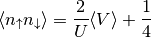

IPT Hysteresis loop¶
Within the iterative perturbative theory (IPT) the aim is to find the coexistance regions.
from __future__ import division, absolute_import, print_function
from dmft.ipt_imag import dmft_loop
from dmft.common import greenF, tau_wn_setup, fit_gf
from dmft.twosite import matsubara_Z
import numpy as np
import matplotlib.pylab as plt
def hysteresis(beta, u_range):
log_g_sig = []
tau, w_n = tau_wn_setup(dict(BETA=beta, N_MATSUBARA=beta))
g_iwn = greenF(w_n)
for u_int in u_range:
g_iwn, sigma = dmft_loop(u_int, 0.5, g_iwn, w_n, tau)
log_g_sig.append((g_iwn, sigma))
return log_g_sig
U = np.linspace(0.1, 3.8, 41)
U = np.concatenate((U, np.linspace(3.6, 2.4, 16)-0.05))
results = []
betarange = [16, 25, 50, 100, 200, 512]
for beta in betarange:
results.append(hysteresis(beta, U))
Quasiparticle weight¶
figz, axz = plt.subplots()
for beta, result in zip(betarange, results):
u_zet = [matsubara_Z(sigma.imag, beta) for _, sigma in result]
axz.plot(U, u_zet, '+-', label='$\\beta={}$'.format(beta))
axz.set_title('Hysteresis loop of the quasiparticle weigth')
axz.legend(loc=0)
axz.set_ylabel('Z')
axz.set_xlabel('U/D')
axz.set_title('Hysteresis loop of the Density of states')
Spectral density at Fermi level¶
figf, axf = plt.subplots()
for beta, result in zip(betarange, results):
tau, w_n = tau_wn_setup(dict(BETA=beta, N_MATSUBARA=3))
u_fl = [-fit_gf(w_n, g_iwn.imag)(0.)for g_iwn, _ in result]
axf.plot(U, u_fl, 'x:', label='$\\beta={}$'.format(beta))
axf.set_ylabel('Dos(0)')
axf.set_xlabel('U/D')
Double occupation¶
Is proportional to the Potential energy by the relation

taking the expression from Potential energy

Which tail behaves as
Upon which one can perform the sum including the tail analytically. The trace for the single band does not influence in this case. The required numerical expression becomes:
figd, axd = plt.subplots()
for beta, result in zip(betarange, results):
tau, w_n = tau_wn_setup(dict(BETA=beta, N_MATSUBARA=beta))
V = np.asarray([(s*g+u**2/4./w_n**2).real.sum()/beta
for (g, s), u in zip(result, U)]) - beta*U**2/32.
D = 2./U*V + 0.25
axd.plot(U, D, '-', label='$\\beta={}$'.format(beta))
axd.set_title('Hysteresis loop of the double occupation')
axd.legend(loc=0)
axd.set_ylabel(r'$\langle n_\uparrow n_\downarrow \rangle$')
axd.set_xlabel('U/D')
Total running time of the script: ( 0 minutes 2.451 seconds)